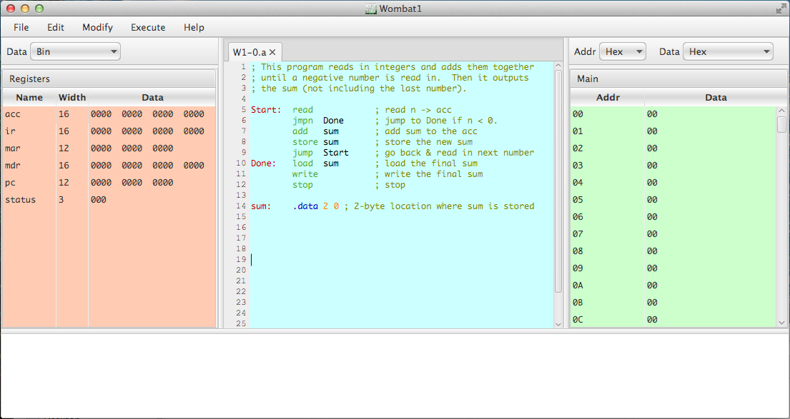

The desktop window (see Figure 20) is the main display for CPU Sim, containing all the menus, editors, and tables used by the program. The console panel at the bottom of the window is used for console input and output. The menus, tables, and text editors are discussed in other sections of the online help.

Figure 20.
The main display after the Wombat1 has been loaded.